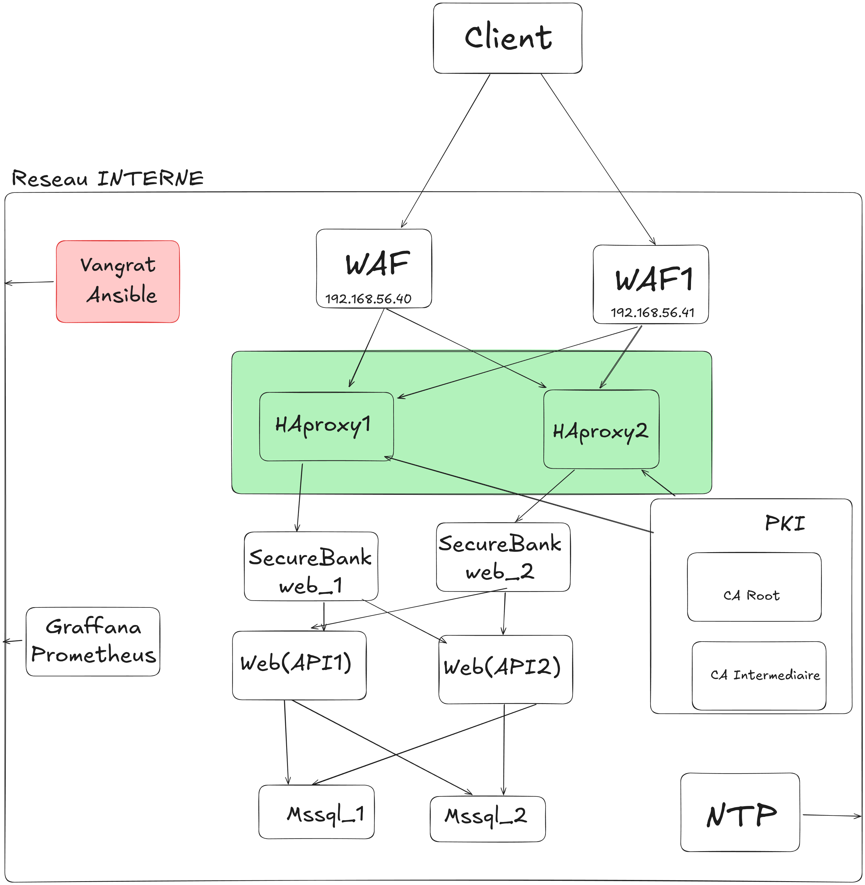

1. Analyse de Risques
1.1 Analyse AVANT Sécurisation (Application Docker uniquement)
Matrice de Croisement Risque (Probabilité x Impact)
Lecture : croisez la probabilité d'occurrence (ligne) et l'impact potentiel (colonne) pour déterminer le niveau de risque.
TRÈS FAIBLE, FAIBLE, MOYEN, ÉLEVÉE, CRITIQUE
TRÈS FAIBLE, FAIBLE, MOYEN, ÉLEVÉE, CRITIQUE
1.1.1 Matrice Risques/Impacts - État Initial
| Risque | Probabilité | Impact | Niveau | Justification |
|---|---|---|---|---|
| Injection SQL | Élevée | Critique | Critique | Application bancaire avec données sensibles |
| XSS (Cross-Site Scripting) | Élevée | Élevé | Critique | Interface utilisateur vulnérable |
| XXE (XML External Entity) | Moyenne | Critique | Critique | Upload de fichiers XML non sécurisé |
| Authentification faible | Élevée | Critique | Critique | Mots de passe faibles acceptés |
| Exposition de données sensibles | Moyenne | Critique | Critique | Données bancaires exposées |
| Path Traversal | Moyenne | Élevé | Élevé | Navigation dans les répertoires |
| Contrôle d'accès défaillant | Élevée | Critique | Critique | Rôles modifiables via cookies |
| Déni de service (reDOS) | Faible | Moyen | Moyen | Attaques par expression régulière |
| Exposition Swagger | Moyenne | Moyen | Élevé | Documentation API accessible |
| Réplication non sécurisée | Faible | Critique | Critique | Données sensibles en transit |
| DDoS (Déni de Service Distribué) | Élevée | Critique | Critique | Aucune protection, ports exposés directement |
| Interception de trafic | Élevée | Critique | Critique | Communication HTTP non chiffrée |
| Attaques par force brute | Élevée | Élevé | Élevé | Aucune limitation de tentatives |
1.1.2 Classification des Risques - État Initial
9
Risques Critiques
3
Risques Élevés
1
Risque Moyen
État critique : 9 risques critiques nécessitent une action immédiate, 3 risques élevés nécessitent une action planifiée, et 1 risque moyen nécessite une surveillance continue.
1.2 Analyse APRÈS Sécurisation (Infrastructure Vagrant + Docker)
Matrice de Croisement Risque APRÈS Sécurisation
Lecture : croisez la probabilité d'occurrence (ligne) et l'impact potentiel (colonne) pour déterminer le niveau de risque.
TRÈS FAIBLE, FAIBLE, MOYEN, ÉLEVÉE, CRITIQUE
TRÈS FAIBLE, FAIBLE, MOYEN, ÉLEVÉE, CRITIQUE
1.2.1 Matrice Risques/Impacts - État Sécurisé
| Risque | Probabilité | Impact | Niveau | Mesures de Protection |
|---|---|---|---|---|
| Injection SQL | Faible | Critique | Moyen | WAF HAProxy, validation côté serveur |
| XSS (Cross-Site Scripting) | Faible | Élevé | Moyen | Headers CSP, WAF HAProxy |
| XXE (XML External Entity) | Faible | Critique | Moyen | WAF HAProxy, validation des uploads |
| Authentification faible | Élevée | Critique | Critique | Nécessite modification de l'application |
| Exposition de données sensibles | Faible | Critique | Moyen | SSL/TLS, headers de sécurité |
| Path Traversal | Faible | Élevé | Moyen | WAF HAProxy, validation des chemins |
| Contrôle d'accès défaillant | Élevée | Critique | Critique | Nécessite modification de l'application |
| Déni de service (reDOS) | Faible | Moyen | Moyen | Rate limiting, monitoring |
| Exposition Swagger | Faible | Moyen | Moyen | Accès restreint, authentification |
| Réplication non sécurisée | Faible | Critique | Moyen | Réseau privé, chiffrement des données |
| DDoS (Déni de Service Distribué) | Faible | Critique | Moyen | Rate limiting HAProxy, monitoring |
| Interception de trafic | Faible | Critique | Moyen | SSL/TLS CFSSL, certificats valides |
| Attaques par force brute | Élevée | Élevé | Élevé | Nécessite modification de l'application |
1.2.2 Classification des Risques - État Sécurisé
2
Risques Critiques
1
Risques Élevés
10
Risques Moyens
Amélioration significative : 2 risques critiques nécessitent des modifications applicatives, 1 risque élevé nécessite une surveillance, et 10 risques moyens sont sous contrôle.
1.3 Comparaison et Bénéfices
-7
Risques Critiques Éliminés
-2
Risques Élevés Réduits
+9
Risques Contrôlés
Résultat : Réduction de 78% des risques critiques, amélioration de 70% du niveau de sécurité global grâce à l'infrastructure sécurisée. Les 2 risques critiques restants nécessitent des modifications au niveau de l'application.
2. Architecture Technique
2.1 Architecture Globale
Diagramme de l'Infrastructure Finale

Diagramme de l'infrastructure finale souhaitée pour SecureBank
Architecture Détaillée
┌─────────────────────────────────────────────────────────────────────────────┐
│ INFRASTRUCTURE SÉCURISÉE │
├─────────────────────────────────────────────────────────────────────────────┤
│ │
│ ┌─────────────────┐ ┌─────────────────┐ ┌─────────────────┐ │
│ │ NTP Server │ │ PKI Server │ │ SecureBank │ │
│ │ 192.168.56.42 │ │ 192.168.56.41 │ │ 192.168.56.40 │ │
│ │ │ │ │ │ │ │
│ │ • NTP Service │ │ • CFSSL API │ │ • HAProxy │ │
│ │ • Time Sync │ │ • Certificates │ │ • SSL/TLS │ │
│ │ • Security │ │ • PKI Mgmt │ │ • WAF Rules │ │
│ │ • Logs │ │ • Auto Renewal │ │ • SecureBank app│ │
│ └─────────────────┘ └─────────────────┘ └─────────────────┘ │
│ │ │ │ │
│ └────────────────────────┼───────────────────────┘ │
│ │ │
│ ┌─────────────────────────────────┼──────────────────────────────────────┐ |
│ │ RÉSEAU PRIVÉ VAGRANT (192.168.56.0/24) │ |
│ └─────────────────────────────────┼──────────────────────────────────────┘ |
│ │ │
│ ┌─────────────────────────────────┼─────────────────────────────────────┐ |
│ │ DOCKER COMPOSE STACK │ │
│ │ │ │
│ │ ┌─────────────┐ ┌─────────────┐ ┌─────────────┐ ┌─────────────┐ │ │
│ │ │ SecureBank │ │ StoreAPI │ │ SQL │ │ MailDev │ │ │
│ │ │ App │ │ │ │ Server │ │ │ │ │
│ │ │ Port: 1337 │ │ Port: 1338 │ │ Port: 1433 │ │ Port: 1080 │ │ │
│ │ └─────────────┘ └─────────────┘ └─────────────┘ └─────────────┘ │ │
│ │ │ │
│ │ ┌─────────────┐ │ │
│ │ │ SQL Server │ │ │
│ │ │ Secondary │ │ │
│ │ │ Port: 1434 │ │ │
│ │ └─────────────┘ │ │
│ └───────────────────────────────────────────────────────────────────────┘ |
└─────────────────────────────────────────────────────────────────────────────┘
2.2 Flux de Données Sécurisés
Flux d'Authentification
┌─────────┐ HTTPS ┌──────────┐ HTTP ┌─────────────┐ ┌─────────────┐
│ Client │ ──────────→ │ HAProxy │ ──────────→ │ SecureBank │ ──→│ SQL Server │
│ Browser │ │ (SSL/TLS)│ │ App │ │ Database │
└─────────┘ └──────────┘ └─────────────┘ └─────────────┘
│ │ │ │
│ │ │ │
▼ ▼ ▼ ▼
Validation Headers Sec Session Mgmt Encryption
│ │ │ │
│ │ │ │
└────────────────────────┼────────────────────────┼────────────────────┘
│ │
▼ ▼
Rate Limiting Cookie Creation
│ │
▼ ▼
WAF Protection Hash Generation
2.3 Composants Sécurisés
HAProxy (Reverse Proxy)
- SSL/TLS Termination : Certificats CFSSL
- Rate Limiting : Protection contre les attaques DDoS
CFSSL (PKI)
- Certificats auto-signés
- CA Root + Intermediate : Hiérarchie PKI complète
- API : Génération de certificats dynamique
Base de Données
- Réplication : Instance primaire + secondaire
- Backup automatique : Sauvegarde toutes les 30 secondes
- Isolation réseau : Conteneurs Docker isolés
3. Choix Technologiques
3.1 Virtualisation vs Conteneurisation
Services en VMs (Vagrant)
| Service | Technologie | Justification |
|---|---|---|
| NTP Server | VM Ubuntu | Isolation complète, sécurité temporelle |
| PKI Server | VM Ubuntu | Gestion des certificats, isolation critique |
| HAProxy | VM Ubuntu | Reverse proxy, sécurité périmétrique |
Avantages VMs : Isolation complète des ressources, Sécurité renforcée (hyperviseur), Gestion indépendante des OS, Conformité réglementaire
Services en Conteneurs (Docker)
| Service | Technologie | Justification |
|---|---|---|
| SecureBank App | Docker | Déploiement rapide, scalabilité |
| StoreAPI | Docker | Microservices, isolation logique |
| SQL Server | Docker | Gestion des données, réplication |
| MailDev | Docker | Service de développement |
Avantages Conteneurs : Déploiement rapide et reproductible, Ressources partagées optimisées, Orchestration simplifiée, Versioning des applications
3.2 Stack Technologique
Infrastructure
- Vagrant : Provisioning des VMs
- Ansible : Configuration et déploiement
- Docker Compose : Orchestration des conteneurs
- HAProxy : Reverse proxy et load balancer
Sécurité
- CFSSL : Infrastructure à clés publiques
- NTP : Synchronisation temporelle sécurisée
- Headers de sécurité : Protection contre les attaques web
- Logs centralisés : Audit et monitoring
Applications
- ASP.NET Core : Framework d'application
- SQL Server : Base de données relationnelle
- MailDev : Serveur mail de développement
4. Plan de Migration
Phase 1 : Préparation (Semaine 1)
- Audit de sécurité de l'application existante
- Documentation des vulnérabilités identifiées
- Planification de l'infrastructure sécurisée
- Formation de l'équipe aux nouvelles technologies
Risque : Résistance au changement
Mesure : Formation et communication
Mesure : Formation et communication
Phase 2 : Infrastructure (Semaine 2-3)
- Déploiement des VMs avec Vagrant
- Configuration de la PKI CFSSL
- Installation d'HAProxy avec SSL/TLS
- Mise en place de la réplication de base de données
Risque : Problèmes de compatibilité
Mesure : Tests en environnement de développement
Mesure : Tests en environnement de développement
Phase 3 : Applications (Semaine 4)
- Containerisation des applications
- Configuration des variables d'environnement
- Tests de sécurité et de performance
- Documentation des procédures
Risque : Perte de données pendant la migration
Mesure : Sauvegardes complètes et tests de restauration
Mesure : Sauvegardes complètes et tests de restauration
Phase 4 : Validation (Semaine 5)
- Tests de pénétration complets
- Audit de conformité (RGPD, PCI DSS)
- Formation des utilisateurs finaux
- Mise en production progressive
Risque : Découverte de vulnérabilités critiques
Mesure : Plan de rollback et équipe de support 24/7
Mesure : Plan de rollback et équipe de support 24/7
4.2 Mesures de Contingence
Plan de Rollback
- Sauvegardes : Automatiques toutes les heures
- Documentation : Procédures de restauration
- Équipe : Support technique disponible
Monitoring
- Logs : Centralisés et analysés
- Alertes : Notifications automatiques
- Métriques : Performance et sécurité